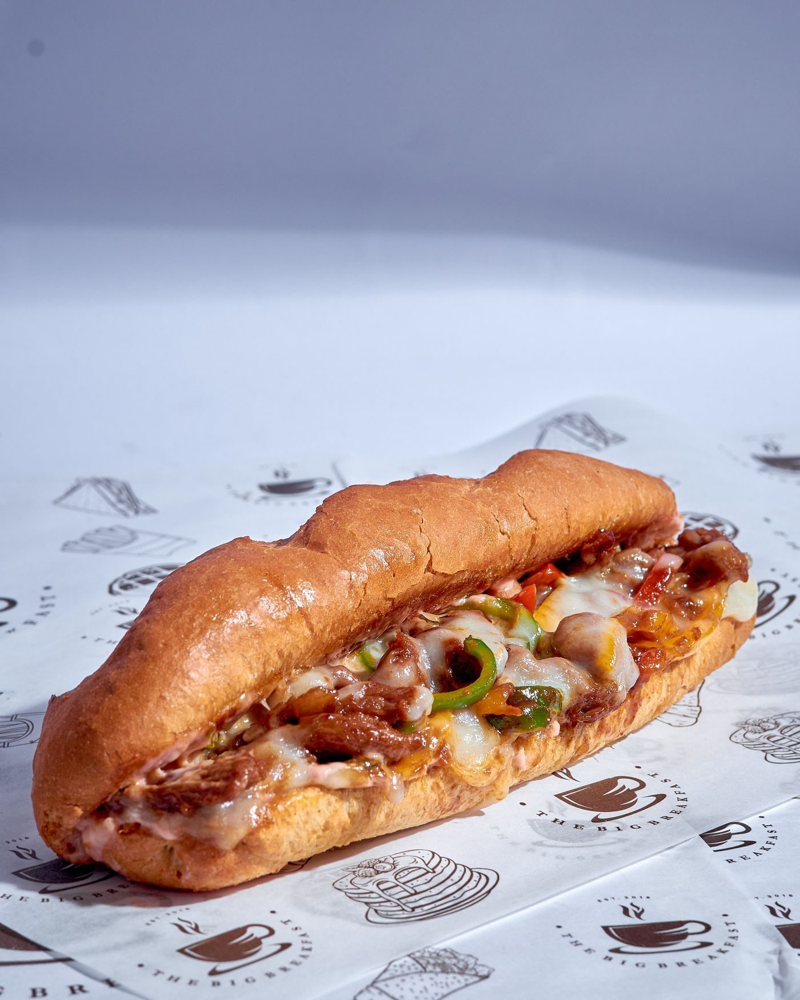
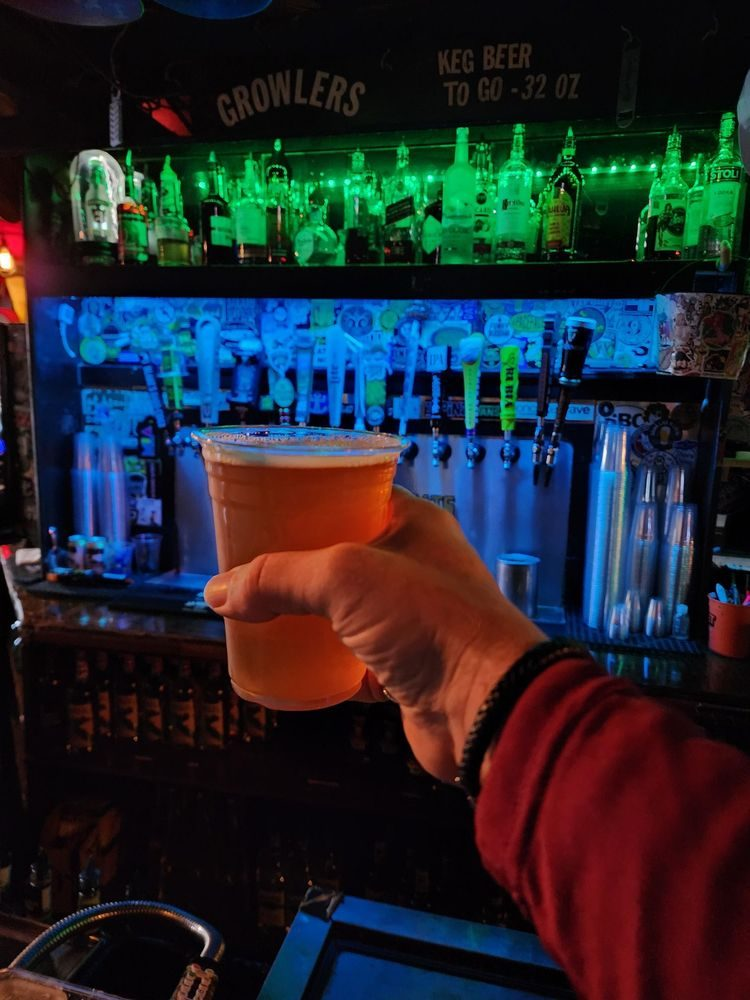

The Rack House Steak and Spirits
A bourbon-forward steakhouse in Gulfport, with choice and prime steaks, fresh seafood, and more than 100 bourbons.
Stock photo: A burger on a grill. This is not a photo of The Rack House Steak and Spirits.
About
The Rack House Steak and Spirits is a bourbon-forward steakhouse in Gulfport, Mississippi. The menu covers choice and prime steaks, lamb, short ribs, fresh fish and seafood, plus tacos, burgers, and chicken. The bar pours more than 100 bourbons, ryes, whiskeys, and scotches and more than 30 wines by the glass, and the upstairs mezzanine lounge overlooks the dining room. Weekday lunch specials, weekend brunch, and a daily happy hour from 3:00 PM to 6:00 PM round out the week.
Menu and bar
Upstairs mezzanine lounge and reservations
The Rack House has an upstairs mezzanine lounge above the dining room. Reservations are offered; the business is led by General Manager Jill Smith. Call (228) 206-2744 or email Jill.smith@rackhousesteaks.com to ask about a table.
Gallery


All gallery photos are stock photos, labeled as such. They show the kind of work and setting described on this page, not this business.
Visit
Address: 1301 26th Avenue, Gulfport, MS 39501
Hours: Monday to Thursday 11:00 AM to 10:00 PM, Friday 11:00 AM to 10:30 PM, Saturday 10:00 AM to 10:30 PM, Sunday 10:00 AM to 9:30 PM. Brunch Saturday and Sunday 10:00 AM to 3:00 PM.
Phone: (228) 206-2744
Contact
Call (228) 206-2744 Email Jill.smith@rackhousesteaks.com
The Rack House Steak and Spirits serves Gulfport, MS. Questions? Call (228) 206-2744.